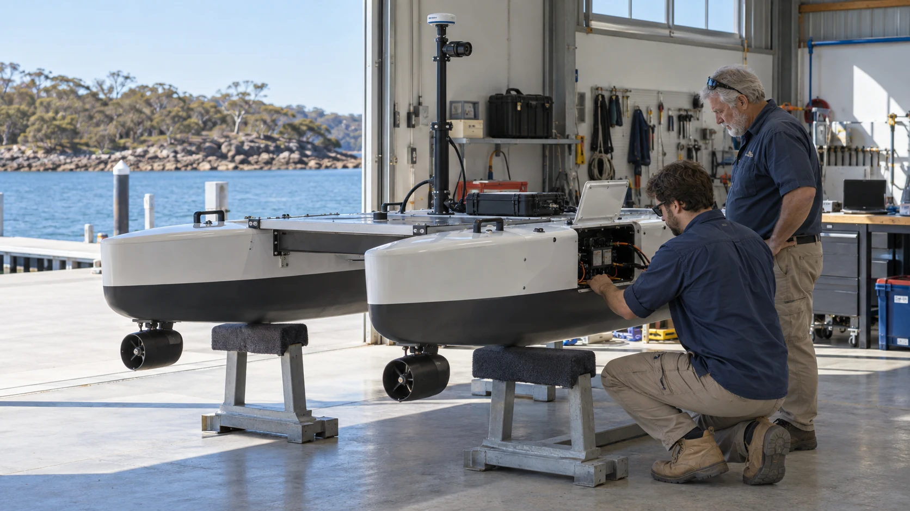

Operating businesses
Continue serving customers through capable local management, with clearly defined member participation.
A mutual is an organisation owned for the benefit of its members. Here, the idea is to give people a clear say in shared businesses and a fair share of the benefits, with clear rules about costs, responsibilities and leaving.

Local businesses would keep serving their customers. A shared organisation could help arrange purchases and finance. A proposed training cooperative, ready SET Co-op, could connect people with paid learning and work placements. Each would need clear responsibilities and rules for working together.
In an imagined marine engineering business, shared ownership could connect the people maintaining vessels today with those developing electric propulsion, autonomous survey craft and underwater robots. Members would decide which work to fund and how to share its benefits.
Continue serving customers through capable local management, with clearly defined member participation.
Assess acquisitions, arrange capital, retain reserves and disclose charges, responsibilities and conflicts.
The proposed ready sustainable employment and training cooperative connects paid learning, placements, shared equipment and transition support.
D03 · A Fair Go for the AI Age D05 · Fiji-Australia Vuvale Union Submission
Co-operatives are one possible legal structure. Queensland guidance describes both distributing co-operatives, which can share eligible profits with members, and non-distributing co-operatives, which retain profits for their purpose. Member voting and the rules for sharing benefits would need to be clearly explained before anyone joined. The legal structure for Mutual Futures has not been chosen.
| Question | What a public design would clarify |
|---|---|
| Membership | How workers, customers, local businesses and communities relate to the assets. |
| Current benefits | How wages, eligible distributions, services and shared facilities are funded. |
| Future members | Which reserves and assets remain collective rather than being exhausted by the current cohort. |
| Moving or resting | What happens to membership and accrued interests during a placement or agreed sabbatical. |
| Leaving | How any individual financial interest is valued and settled without pretending all shared reserves are withdrawable. |
| Decision-making | Member authority, delegated management, review, conflicts and amendments. No founder veto or other veto power is proposed. |
Joining a shared business would not give it control over a person's private records, beliefs or community knowledge. First Nations would decide on their own participation. Shared services and licences would need clear terms, including how people could leave or change providers.
P05 · Native Nations of the World P06 · GAJRA Earth Infinity D09 · The B.E.L.A.U. Protopian Gambit